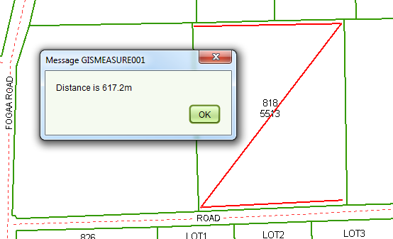

The  Measure
Tool can be used to estimate distances on the map using your mouse. Click any location on the
map to start measuring and double click to complete the measure. A message dialog will appear
indicating the distance on the map in either meters or kilometres. Click OK to close the
message dialog and remove the measure line.
Measure
Tool can be used to estimate distances on the map using your mouse. Click any location on the
map to start measuring and double click to complete the measure. A message dialog will appear
indicating the distance on the map in either meters or kilometres. Click OK to close the
message dialog and remove the measure line.
You can also use the tool to measure a perimeter or a traverse. Once you have started measuring, simply use single click to add new points to the measure line with a double click to complete the measure. The distance displayed will be the complete length of the measure line.

Measure Tool
The distance shown by this tool is calculated directly from the map and should be considered indicative only. Itmust not be used for formal or official reporting of boundary distances or any other distance related measure.
Note that this tool is only available to users that have the Measure Tool security role.